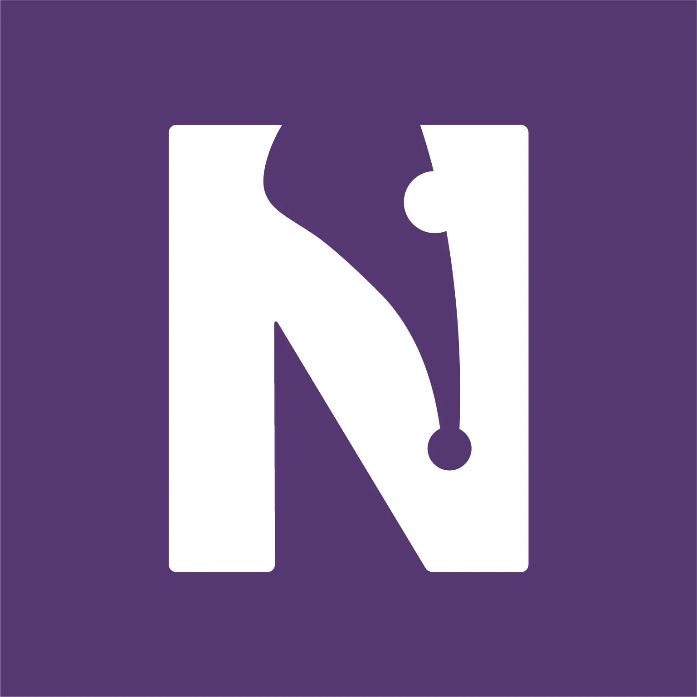
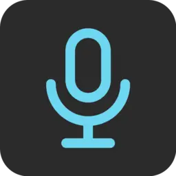
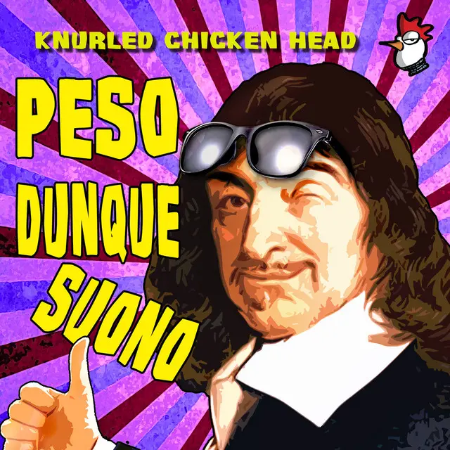

Failure resume
Failure is irrelevant unless is catastrophic
Elon Musk
2026

Writing coach business,
Post-mortem
Full post-mortem
I helped a friend manage and grow his writing-coach business by automating and optimizing several of its
processes. The business was built around my friend's narrative model, which staked everything on the
quality of storytelling.
However, that focus on storytelling quality turned out to be counterproductive in a market that doesn't reward
the quality of stories nearly as much as it rewards getting published through connections and shortcuts.
2024
(Book formatting tool),
Online tool
Together with a software engineer friend, we wanted to build an online tool for book layout and formatting. We knew the problems of the industry: the traditional process is slow, expensive, and handled by designers using complex tools. Our idea was to simplify it: make a tool even authors could use, and with enough depth to serve as a power-tool for designers too. We imagined template libraries, author profiles, and the ability to share layout presets. During market research we discovered two big and established competitors. Both were polished, had solved the hardest technical challenges, and used a one-time payment model: hard to compete with as a small team. Also one was built by someone teaching how to get rich selling kindles, the other was positioned as its rival. We shelved the idea, but got the point: sometimes good will is not enough.
2023

Words Flow,
Podcast
My friend website [ITA]
To promote a friend's writing services, we considered launching a podcast. People listen to podcasts for entertainment, but need the illusion of usefulness. So, each episode tackled a deep, complex topic, made engaging through my friend’s experience. For the structure, we took inspiration from the Building a Second Brain Podcast: short, dense episodes, centered on a single topic. We designed a logo, recorded 3 episodes, and gathered feedback. But in the end, we realized that the time required for editing and publishing wasn’t worth the effort. Still, the process taught us a lot about the podcasting world (competitors, optimal episode length, branding challenges, how hard it is to monetize...), and about the real cost of time in a business.
2019
(Selling digital products),
Etsy shop
Etsy
For a few months, I worked on launching an Etsy shop with a graphic designer friend.
The plan was simple: sell printable
products.
We explored several directions but focused on quotes, where we saw clear space for improvement.
But we quickly hit a harsh wall: the Italian business regulations.
Beyond the percentage cut from each sale, just opening a business in Italy means facing a mandatory fixed
tax (IRPEF), around €2000 a year regardless of profit.
For a venture built around 2-3€ products, the math didn’t add up.
It was my first taste of how (Italian...) regulation can crush experimentation, and it validated what many
freelancers in Italy say: the state isn’t on your side.
NB: now I don't consider it a good business, but a good experiment for a 18 years old!
Reality School,
Comic strip series
Remade with ChatGPT to translate into English: Classes at IPIA, Nutcrackers, NO
{kind=link}
{kind=link}
{kind=link}
During my final year of high school, a friend and I started a comic strip series about everyday
student life (I wrote, he drew). The humor leaned on Italian school stereotypes:
IPIA (vocational/trade schools) as extraordinarily dumb, Liceo (academic high schools) as
pretentious intellectuals, and ITT (technical institutes, where I studied) as regular
guys desperately trying to get laid.
Despite starting to gain traction, the response from our target audience (high schoolers) was
lukewarm: they gravitated toward nihilistic, melancholic content (BoJack Horseman, Zerocalcare...) rather than
slice-of-life comedy in the style of a reality show (hence the name).
2018

Knurled Chicken Head,
Band + Album
Album on spotify [ITA]
For four years, I played drums in Knurled Chicken Head (name's inspired by knobs), an original band based in Bolzano. It was my first dive into creative collaboration, where I learned to navigate group dynamics and creative disagreements. While we had energy and ideas, we lacked structure: our songwriting suffered from limited music theory knowledge, vocals were our weakest element, and we underestimated marketing focusing only on live shows. The breaking point came when trying to balance midnight rehearsals with 6am university commutes, but the deeper truth was realizing I didn't want to "become a musician when I grew up" ((as with mathematics) hauling gear at 2am after a gig lost its charm fast).